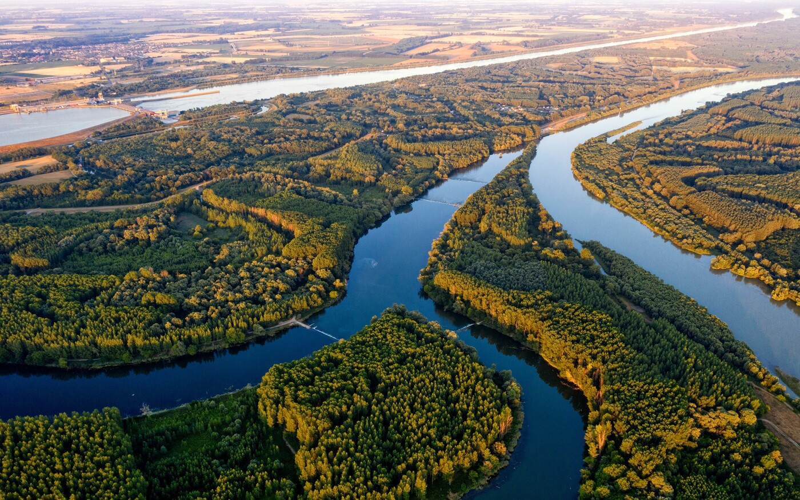

Hazánk Vizei
Magyarország legszebb vizei
Ismerd meg Magyarország legszebb tavainak és folyóinak világát, és fedezd fel a vízi élővilág csodáit!
Balaton
A Balaton Közép-Európa legnagyobb tava, amelyet a "magyar tengerként" is emlegetnek. Népszerű turisztikai célpont.

Duna
A Duna Magyarország fő folyója, amely több országon átível, és számos kulturális és történelmi jelentőséggel bír.
Tisza
A Tisza Magyarország második legnagyobb folyója, amely különleges élővilágával és nyugodt partjaival ismert.

Velencei-tó
A Velencei-tó Magyarország egyik legmelegebb tava, amely ideális a nyári fürdőzéshez és a vízi sportokhoz.